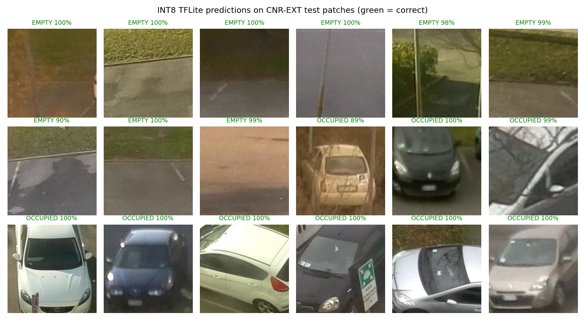

Application Project · Project Phase II · Amrita Vishwa Vidyapeetham, Coimbatore
Automated Slot-Allocated Smart Parking System
A camera on an ESP32-S3 decides whether a parking slot is empty or occupied entirely on the device, using a 33 KB INT8 neural network, and shows the answer on its own web dashboard. No cloud, no per-slot sensors.
GitHub repository · Guide: Dr. R. Karthi, Department of CSE
Objectives
- Detect slot occupancy with low-cost hardware instead of one ultrasonic/IR sensor per slot.
- Run inference at the edge (TinyML), so the system keeps working without internet.
- Allocate slots intelligently: near the entrance, near the lift, and without clustering cars in one row.
- Serve users through a web page and SMS - no app installation.
Problem statement
Drivers lose time and fuel searching for parking, and entrances congest because slots are filled first-come, first-served. Existing smart-parking systems either need a sensor per slot (expensive to wire at scale), heavy computer vision such as YOLO or ANPR (needs strong hardware and good lighting), or a constant internet connection.
We target a middle path: a cheap camera node that runs a tiny classifier locally, combined with a backend that decides which slot to give each driver.
Methodology
1. Occupancy model
CNN: Conv16 → MaxPool → Conv32 → MaxPool → Conv64 → GlobalAvgPool → Dense32 → Dropout → Dense2. 25,730 parameters. Trained in Keras on the public CNRPark+EXT dataset (balanced 20,000-image subset, augmentation for small camera shifts), converted to an INT8 TensorFlow Lite model, embedded in the firmware as a C array.
2. Allocation (designed)
Each free slot gets a score; the lowest wins:
Score(s) = w1 * D_entrance(s) + w2 * D_lift(s) + w3 * (row_occupancy + alpha * recent_allocations_in_row)The congestion term spreads consecutive cars across rows. Weights sum to 1.
3. System architecture (planned)
Wrong parking is flagged with a time-window rule: if the assigned slot stays empty while another slot becomes occupied shortly after an entry, the entry is matched to that slot and the driver is asked to confirm.
Project progress
| Component | Status |
|---|---|
| CNN training, INT8 conversion | Done |
| ESP32-S3 camera capture + on-device inference | Done |
| Access-point web dashboard (prediction, confidence, timings) | Done |
| Per-slot ROI, retraining on campus images | Planned |
| LoRa link, Raspberry Pi backend, QR entry, SMS | Planned |
| Allocation + wrong-parking logic (implementation) | Designed, not yet implemented |
Limitations. A synthetic 5° rotation drops accuracy to about 79%, while shifts and brightness changes cost under 2 points. Accuracy is measured on CNR-EXT patches, not on our campus lot. The demo currently classifies the whole frame, so people or objects in view can be called "occupied"; per-slot cropping and campus training data are the next step. Dashboard startup on a power bank is still being debugged.
Demonstration
Sample outputs from the deployed INT8 model

Run it yourself (no hardware)
git clone https://github.com/ballsycodes/Automated-Slot-Allocated-Smart-Parking-System
cd Automated-Slot-Allocated-Smart-Parking-System
pip install -r requirements.txt
python demo/run_demo.pyThis regenerates demo/results/metrics_samples.json and sample_predictions.png. Passing --dataset evaluates the full test split.
Documentation
- Research paper draft (PDF) - method, evaluation, limitations
- README - overview, status, hardware setup, training steps
- demo/ - run-based demo, results, videos
- firmware/ - ESP32-S3 Arduino sketches
- training/ - dataset checks, training, TFLite conversion
Hardware: ESP32-S3-WROOM-1 N16R8 board with OV3660 camera; Raspberry Pi 3A+ planned for the backend.
Team 79
| Name | Register no. | Contribution |
|---|---|---|
| Druva Teja | CB.SC.U4CSE23317 | CNN model, quantization, TinyML pipeline |
| Sai Jeevan | CB.SC.U4CSE23124 | ESP32-S3 hardware, camera, dashboard |
| Manish Sakamuri | CB.SC.U4CSE23125 | System architecture, IoT integration |
| Tejeswara D | CB.SC.U4CSE23614 | Allocation algorithm, backend design |
Guide: Dr. R. Karthi, Department of CSE, Amrita School of Computing, Coimbatore.